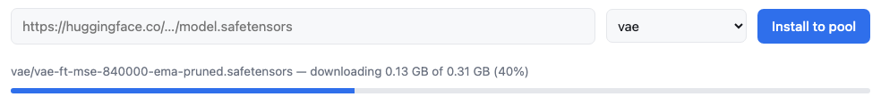

Is there real demand for this? And what is it, exactly — a content-creation studio, or another AI playground?
The unit of work is a node graph, not a prompt — an inspectable pipeline where a tweak reruns one node, not the whole generation. A studio workload, a separate persona from any playground — and it should ship as its own module, never merged into one. Today it's a single-user desktop app: no auth, arbitrary-Python nodes, one GPU per instance.
Not the better product — the proof of demand. The commercial suites lead on go-to-market; ComfyUI leads the open-source side of the same category, and this repo is its go-to-market gap, closed.
VFX & animation · advertising & creative studios · gaming · eCommerce & fashion
The category's open-source leader has no enterprise deployment story: no SSO, no isolation, no shared-GPU economics, no per-user accounting.
Can the expensive machine under each creator's desk be broken up — GPUs to the datacenter, frontend untouched?
Keep the frontend identical — stock ComfyUI at a pinned commit, not a wrapper — and separate it from the backend: cards leave the desks and become one shared machine pool that turns off between jobs. Three pillars:
Pods and nodes scale to zero on queue depth; the queue converts one person's setup time into another's inference. Ten designers: ~$7,100/mo → $120–950/mo. showback names whose GPU-seconds they were.
A checkpoint pulled once is on the volume for everyone — no 7 GB re-downloads per laptop. The 40–120 GB team library, LoRAs and outputs outlive pods and the cluster itself; crashed node ≠ lost afternoon.
The loop below is identical to the desktop — except the run step lands on pooled L4s today and L40S / A100 / H100 tiers as jobs grow: a job declares what it needs, the queue places it. Nobody pays 80 GB prices for a 24 GB job.
Four of five steps never touch a GPU — why ten designers need one pool and a queue, not ten cards. Savings widen with headcount: 33% at five people → 64% at thirty, plus caching that reruns only the node you changed.
ComfyUI on loopback, no Service, no Route; namespace default-deny; cluster SSO; every grant audited.
Per-user showback and monthly quota; three cost states, each one command (running / parked / torn down).
One namespace. Driver, nodes, control plane, TLS: the platform's pager — the OpenShift sell, verbatim.
What does this provide beyond the existing Omni–ComfyUI integration?
~9,000 lines of Python and shell in redhat-et/comfyui-on-openshift: the queue, the isolation, the autoscaling, the accounting, and the failure handling you otherwise meet at 2am.
The bridge is the right integration shape: ComfyUI nodes that delegate a generation call to a vLLM Omni server, composing with everything else on the canvas.
What it leaves open — by its own README — is deployment: no auth, no failover, no progress streaming, one hand-started server per model. The same list this platform closes.
The bridge puts Omni on the canvas; this puts the canvas in production. Run here, it inherits SSO, network policy and the audit log for free.
Scope, honestly: the graph never leaves ComfyUI — delegation carries coarse prompt→output steps, image-only today. How far that reaches is an open question the roadmap's engine spike exists to answer.
Can we see it work — the workflow designers actually have, not a mockup of it?
make demo-local runs the real pool on the machine in front of you, zero dollars of cloud — and each worker serves the stock ComfyUI canvas, the exact frontend designers already run. Below, the loop in one take — the same single buttons as the desktop for the template and for resolving the graph; only where the models and the GPU live has changed.
stock canvas → SDXL template → two models found · named · sized → Manager pulls 12.6 GB to the worker, server-side (time-lapse) → errors clear → Run → live per-node progress → the render — one scripted take, real renders
Manager names what is missing, in the canvas. The fetch is the gateway's Install to pool button — allowlisted source, .safetensors verified at byte nine — because the workers have no internet by design.

One laptop GPU time-shared — pods simulated, silicon not. SSO, KEDA and scale-to-zero need the cluster; the $0 → $0 → ~$50 ladder ends at a live-cluster day.
Why not simply serve every model behind an engine? What actually drives GPU cost for this workload?
Everything on this page is that sentence, checked from a different side. The corollary: the marginal model costs a machine on a serving tier, and disk on the pool.
When one model concentrates at sustained duty, residency wins for that model — the promotion rule, next slide. Two tiers, one design.
Where does the strategic inference engine fit in this? And does any of it stray into the application layer?
A serving engine holds one model resident behind an API — residency scales with catalog size; a design library is many models touched briefly — the pool scales with concurrency. And nothing here is an application layer: ComfyUI is upstream's app at a pinned commit; this repo is deployment wiring.
| Corner | Who buys it | The tier |
|---|---|---|
| Voice: TTS, speech, realtime agents — likely Omni's largest enterprise corner | Contact centers, IVR, accessibility — the classic Red Hat buyer | Omni, resident |
| Generation called from application code — endpoint + SLA | Product teams; API-first customers | Omni, resident |
| Designer image & video workflows — graphs, catalogs, 60k custom nodes | Studios, agencies, brand teams | The pool — this repo |
| A hot model inside those workflows | Same studios, once showback shows concentration | Omni beside the pool, via the bridge |
| Omni-modal & robot-policy models | Robotics / agents programs | Omni |
The promotion rule: when GET /api/showback shows one model dominating GPU-seconds at sustained duty, stand up an Omni engine for it beside the pool, reached through the bridge nodes — same cluster, same SSO, same bill; the marginal model costs a machine on a serving tier, and disk on the pool. The bounded part, stated plainly: promotion carries a coarse prompt→output call — the graph itself never leaves ComfyUI, latent/ControlNet-level control does not fit an API, and the bridge is image-only today. How much of a real hot path fits that shape is an open question; showback answers it with data, per team.
make test runs the real gateway and worker on a laptop in about a minute — no cluster, no GPU, no AWS account — and make demo-local renders through the same pool on the laptop's own GPU (slide 4). The README's comparison table and docs/13-vllm-omni.md are the homework in written form; a workflow blog post series is the cheapest proof after that.